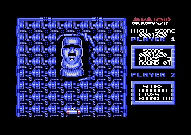

<meta charset="utf-8">
<meta name="viewport" content="width=device-width, initial-scale=1">
<title>Arkanoid: the rounds</title>
<link rel="preconnect" href="https://fonts.googleapis.com">
<link rel="stylesheet" href="https://fonts.googleapis.com/css2?family=Lato:wght@400;700;900&family=IBM+Plex+Mono:wght@400;500&display=swap">
<style>
:root{
  --bg:#23262d; --paper:#e9e7e1; --surface:#ffffff; --surface-2:#f1efea; --line:#d5d3cc; --line-soft:#e0ded8;
  --ink:#2f3136; --ink-soft:#55585f; --ink-mute:#80838a;
  --link:#1f5fa8; --link-hover:#154480; --accent:#1f5fa8;
  --amber:#c25a00; --cyan:#1f5fa8; --coral:#d04a3a; --green:#2a8a4a; --violet:#4a5bd6; --hl:#fff0c2;
  --chip:#2f3136; --chip-ink:#ffffff;
  --c64blue:#40318d; --c64grey:#686868;
  --fd:'Lato',system-ui,sans-serif; --fb:'Lato',system-ui,sans-serif; --fm:'IBM Plex Mono',ui-monospace,Menlo,monospace;
  --col:1080px; --gx:68px; --fs:17px; --lh:1.6; --hw:900; --h1:46px; --h2:26px; --sy:48px; --pp:26px; --r:10px;
  --plate-shadow:0 1px 2px rgba(0,0,0,.05),0 4px 14px rgba(0,0,0,.05);
}
*{box-sizing:border-box}
html{background:var(--bg);min-height:100%}
body{background:var(--paper);color:var(--ink);font-family:var(--fb);font-size:var(--fs);line-height:var(--lh);max-width:var(--col);margin:0 auto;min-height:100vh;padding:0 0 4rem}
h1,h2,h3{font-weight:var(--hw);letter-spacing:-.01em;text-wrap:balance;color:var(--ink);margin:0}
h3{font-size:19px;margin:26px 0 8px}
.wrap{padding:0 var(--gx)}
.hero{padding:48px var(--gx) 8px;text-align:left}
.eyebrow{font-family:var(--fm);font-size:12px;letter-spacing:.08em;text-transform:uppercase;color:var(--ink-mute);margin:0 0 10px}
.hero h1{font-size:var(--h1);line-height:1.15;letter-spacing:-.02em;margin:0 0 14px}
.hero .sub{margin:0 0 .6em;color:var(--ink-soft)}
section{padding:var(--sy) 0 24px}
section:last-of-type{border-bottom:none}
.fig{font-family:var(--fm);font-size:12px;letter-spacing:.08em;text-transform:uppercase;color:var(--ink-mute);margin:0 0 10px}
h2.t{font-size:var(--h2);margin-bottom:12px}
.lede{color:var(--ink-soft);margin:0 0 30px}
.plate{background:var(--surface);border:1px solid var(--line);border-radius:var(--r);padding:var(--pp);box-shadow:var(--plate-shadow);margin:0 0 22px}
.cap{font-size:14px;color:var(--ink-mute);margin-top:14px;line-height:1.55}
.cap b{color:var(--ink);font-weight:700}
code{font-family:var(--fm);font-size:.82em;background:var(--chip);color:var(--chip-ink);border-radius:4px;padding:2px 6px;white-space:nowrap}
canvas{image-rendering:pixelated;max-width:100%;display:block}
.row{display:flex;flex-wrap:wrap;gap:8px;align-items:center;margin:12px 0 0}
button{font-size:13px;padding:6px 11px}
button.on{background:var(--btn-on-bg);color:var(--btn-on-ink);border-color:var(--btn-on-line)}
input[type=range]{width:220px}
.lab{font-family:var(--fm);font-size:13px;color:var(--ink-soft)}
table{border-collapse:collapse;width:100%;font-size:15px;margin:8px 0 0}
th,td{text-align:left;padding:6px 10px;border-bottom:1px solid var(--line-soft);vertical-align:top}
th{font-size:12px;font-family:var(--fm);text-transform:uppercase;letter-spacing:.06em;color:var(--ink-mute);font-weight:500}
.scroll{overflow-x:auto}
.bands{font-family:var(--fm);font-size:13px;line-height:1.5;margin:12px 0 0;padding:0;list-style:none}
.bands li{padding:4px 8px;border-left:3px solid transparent;cursor:default}
.bands li.hl{background:var(--hl);border-left-color:var(--amber)}
.two{display:grid;grid-template-columns:auto 1fr;gap:22px;align-items:start}
.out{font-family:var(--fm);font-size:14px;background:var(--surface-2);border-radius:6px;padding:10px 12px;margin:12px 0 0;min-height:3.2em}
.stages{display:grid;grid-template-columns:repeat(16,1fr);gap:3px;margin:12px 0 0}
.stages button{padding:5px 0;font-size:12px}
.msg{font-size:14px;color:var(--coral)}
@media (max-width:760px){:root{--gx:16px;--h1:36px;--pp:14px}.two{grid-template-columns:1fr}.stages{grid-template-columns:repeat(8,1fr)}}
table.bricks canvas{display:inline-block;vertical-align:middle}
table.bricks td{vertical-align:middle}
.grid{display:grid;grid-template-columns:repeat(auto-fill,minmax(230px,1fr));gap:18px}.grid figure{margin:0}.grid canvas{width:100%}.grid figcaption{font-family:var(--fm);font-size:12px;color:var(--ink-mute)}
</style>

<!-- tabs -->
<header class="hero">
  <p class="eyebrow">Commodore 64 · 1987 · Imagine</p>
  <h1>Arkanoid: the rounds</h1>
  <p class="sub">The nine kinds of brick, what each is worth and how silver counts its hits; all 32 walls, drawn from their 160 bytes each at <code>$8000</code>-<code>$93FF</code>; and round 33, Doh.</p>
</header>
<main class="wrap">
<section id="bricks">
  <p class="fig">01 · The bricks</p>
  <h2 class="t">Seven colours, silver and gold</h2>
  <p class="lede">Every wall is built from nine kinds of brick. Seven colours break at the first hit, each worth its own points; silver takes two to five hits, by round; gold never breaks.</p>
  <div class="plate">
    <div class="scroll"><table class="bricks">
      <thead><tr><th>Brick</th><th>Kind</th><th>Wall type</th><th>Points</th><th>Hits</th><th>In rounds 1-32</th></tr></thead>
      <tbody id="ak-bricks"></tbody>
    </table></div>
    <p class="cap"><b>Each brick is drawn from its two characters in the game's character set</b>, at <code>$CC00</code>, in the play screen's colours: a black background, grey and light blue as the two shared colours (<code>play_screen_colours</code>, <code>$F719</code>) and the brick's own colour from colour RAM. The wall type is the 4-bit number a round's map holds for the brick (<code>draw_wall</code>, <code>$F40E</code>); the last column counts the bricks of each kind over all 32 maps.</p>
  </div>
  <p>A coloured brick is wall type 1 to 7, and <code>draw_wall</code> gives its two characters, <code>$80</code> and <code>$81</code>, colour RAM type + 8. The 8 tells the video chip to draw the character in multicolour, and the 1 to 7 is the colour of the brick's face: white, red, cyan, purple, green, blue or yellow. Type 0 would be a black brick worth nothing, and no round uses it. The points come from <code>brick_points</code> (<code>$B2C4</code>), looked up by the colour, not by the type, so they follow the brick's look: blue is the cheapest at 70, yellow the dearest at 130. They are the game's numbers, not the arcade's.</p>
  <p>Silver and gold bricks are wall types 8 and up. Type AND 3 = 1 makes a silver brick, <code>$85 $89</code>, and anything else a gold one, <code>$8D $91</code>, both in colour RAM 9. Each gets an entry in three small tables, a flag at <code>$0300</code>, a hit counter at <code>$0355</code> and its screen address at <code>$03AA</code>, so that a hit can find it again. On the Commodore 64 gold looks light blue and white, because its face is drawn in the second shared colour.</p>
  <p>A silver brick, when it finally breaks, is worth 100 points in every round. The game reads the points by colour for every brick it breaks, and silver's colour RAM, 9, gives the same entry as white. A gold brick gives nothing: <code>gold_brick_hit</code> (<code>$B010</code>) redraws it, plays the metal sound and returns before the points.</p>
  <p>Only coloured and silver bricks count towards the end of the round. <code>draw_wall</code> adds one to the bricks-left count (<code>$0455</code>) for each, and leaves gold out; the round ends when the count reaches 0. A capsule can fall from any brick that breaks, a silver one on its last hit included, but never from a gold one. Every brick the ball touches, gold too, adds 4 to the fraction that speeds the ball up (<code>speed_up</code>, <code>$AF5F</code>).</p>
</section>

<section id="silver">
  <p class="fig">02 · Silver</p>
  <h2 class="t">A silver brick counts a hit when it stops shining</h2>
  <p class="lede">Hit a silver brick and a white shine runs across it. The game takes one off the brick's hit counter at the end of the shine, not at the hit, and a hit that arrives while the shine is still running starts the shine again without counting.</p>
  <div class="plate">
    <div class="two">
      <canvas id="ak-sv-cv" width="128" height="64" role="img" aria-label="A silver brick, drawn eight times its size"></canvas>
      <div>
        <div class="row" style="margin-top:0">
          <button type="button" id="ak-sv-hit">Hit</button>
          <button type="button" id="ak-sv-two">Hit twice, 6 frames apart</button>
          <button type="button" id="ak-sv-new">New brick</button>
          <label class="lab">Rounds <select id="ak-sv-round"><option value="0">1-8</option><option value="8">9-16</option><option value="16">17-24</option><option value="24">25-32</option></select></label>
        </div>
        <p class="out" id="ak-sv-out" aria-live="polite"></p>
      </div>
    </div>
    <p class="cap"><b>A port of the game's code for one silver brick</b>: the shine of <code>silver_shine</code> (<code>$AB55</code>) and the hit of <code>silver_brick_hit</code> (<code>$B073</code>), stepped fifty times a second. <code>test_bricks.js</code> holds it to the game's own routines.</p>
  </div>
  <p><code>draw_wall</code> sets a silver brick's counter to one more than the round's number at <code>silver_hits_by_round</code> (<code>$F52A</code>): 2 in rounds 1 to 8, 3 in 9 to 16, 4 in 17 to 24 and 5 in 25 to 32. It also starts every silver and gold brick shining as the round is drawn, and that first shine takes one off, so a brick in round 1 begins the round at 1.</p>
  <p>The shine is four characters a side. On every fourth frame (<code>$0225</code> counts them) <code>silver_shine</code> moves each shining brick on by one character: the left half from <code>$85</code> down to <code>$82</code>, the right from <code>$89</code> down to <code>$86</code>. When the right half reaches <code>$86</code> the shine is over and the counter goes down by one. That takes three steps, 9 to 12 frames after the hit depending on where the four-frame count stood.</p>
  <p>A hit looks at the counter first (<code>$B09E</code>). At 0 the brick breaks like a coloured one. Otherwise the brick is drawn back as <code>$85 $89</code> and set shining again, and the counter waits for that shine to end. So two hits less than 9 frames apart count as one, and a brick hit every 8 frames or sooner never breaks. With the game's code run on the kit's 6502, eight hits 4 frames apart left a round-1 silver brick standing, where two hits 12 frames apart broke it. Hits that close need a ball back at the brick within a sixth of a second, as a ball bouncing in a narrow gap beside it, or a second ball after the D capsule, might manage; whether it happens in play was not tried.</p>
  <p>Gold bricks shine through <code>$8D</code> to <code>$8A</code> and <code>$91</code> to <code>$8E</code> by the same routine. Their counter is set to <code>$80</code>, which <code>silver_shine</code> never takes one from, and <code>gold_brick_hit</code> never looks at it.</p>
</section>

<section>
  <p class="fig">03 · Rounds 1-32</p>
  <h2 class="t">Every wall</h2>
  <p class="lede">Each picture is drawn from the round's bytes with a port of the game's wall routine (<code>draw_wall</code>, <code>$F40E</code>, and <code>draw_playfield_background</code>, <code>$F552</code>): the tile set and colour of the round, the brick characters, and the shading each brick casts below and to its right. The numbers under each give the bricks to clear and the hits a silver brick takes in that round.</p>
  <div id="grid" class="grid"></div>
</section>
<section>
  <p class="fig">04 · Round 33</p>
  <h2 class="t">Doh</h2>
  <div class="plate">
    <p class="cap">Round 33 has no brick map. It copies a screen of Doh's characters from <code>$7B90</code> and swaps in its own character set (<code>doh_setup</code>, <code>$9C59</code>).</p></div>
</section>
</main>

<footer style="margin:16px 0 0;padding:22px var(--gx) 0;border-top:1px solid #e0ded8;font-family:'IBM Plex Mono',ui-monospace,Menlo,monospace;font-size:12px;color:#80838a"><a href="https://github.com/gamesexplained/gamesexplained" aria-label="GitHub" style="display:inline-flex;align-items:center;justify-content:center;width:26px;height:26px;margin-left:8px;border:1px solid #e0ded8;border-radius:7px;background:#ffffff;color:#80838a;vertical-align:middle"><svg width="15" height="15" viewBox="0 0 24 24" fill="currentColor" aria-hidden="true"><path d="M12 .297c-6.63 0-12 5.373-12 12 0 5.303 3.438 9.8 8.205 11.385.6.113.82-.258.82-.577 0-.285-.01-1.04-.015-2.04-3.338.724-4.042-1.61-4.042-1.61C4.422 18.07 3.633 17.7 3.633 17.7c-1.087-.744.084-.729.084-.729 1.205.084 1.838 1.236 1.838 1.236 1.07 1.835 2.809 1.305 3.495.998.108-.776.417-1.305.76-1.605-2.665-.3-5.466-1.332-5.466-5.93 0-1.31.465-2.38 1.235-3.22-.135-.303-.54-1.523.105-3.176 0 0 1.005-.322 3.3 1.23.96-.267 1.98-.399 3-.405 1.02.006 2.04.138 3 .405 2.28-1.552 3.285-1.23 3.285-1.23.645 1.653.24 2.873.12 3.176.765.84 1.23 1.91 1.23 3.22 0 4.61-2.805 5.625-5.475 5.92.42.36.81 1.096.81 2.22 0 1.606-.015 2.896-.015 3.286 0 .315.21.69.825.57C20.565 22.092 24 17.592 24 12.297c0-6.627-5.373-12-12-12"/></svg></a><a href="https://discord.gg/3V9GWyRDWV" aria-label="Discord" style="display:inline-flex;align-items:center;justify-content:center;width:26px;height:26px;margin-left:8px;border:1px solid #e0ded8;border-radius:7px;background:#ffffff;color:#80838a;vertical-align:middle"><svg width="15" height="15" viewBox="0 0 24 24" fill="currentColor" aria-hidden="true"><path d="M20.317 4.3698a19.7913 19.7913 0 00-4.8851-1.5152.0741.0741 0 00-.0785.0371c-.211.3753-.4447.8648-.6083 1.2495-1.8447-.2762-3.68-.2762-5.4868 0-.1636-.3933-.4058-.8742-.6177-1.2495a.077.077 0 00-.0785-.037 19.7363 19.7363 0 00-4.8852 1.515.0699.0699 0 00-.0321.0277C.5334 9.0458-.319 13.5799.0992 18.0578a.0824.0824 0 00.0312.0561c2.0528 1.5076 4.0413 2.4228 5.9929 3.0294a.0777.0777 0 00.0842-.0276c.4616-.6304.8731-1.2952 1.226-1.9942a.076.076 0 00-.0416-.1057c-.6528-.2476-1.2743-.5495-1.8722-.8923a.077.077 0 01-.0076-.1277c.1258-.0943.2517-.1923.3718-.2914a.0743.0743 0 01.0776-.0105c3.9278 1.7933 8.18 1.7933 12.0614 0a.0739.0739 0 01.0785.0095c.1202.099.246.1981.3728.2924a.077.077 0 01-.0066.1276 12.2986 12.2986 0 01-1.873.8914.0766.0766 0 00-.0407.1067c.3604.698.7719 1.3628 1.225 1.9932a.076.076 0 00.0842.0286c1.961-.6067 3.9495-1.5219 6.0023-3.0294a.077.077 0 00.0313-.0552c.5004-5.177-.8382-9.6739-3.5485-13.6604a.061.061 0 00-.0312-.0286zM8.02 15.3312c-1.1825 0-2.1569-1.0857-2.1569-2.419 0-1.3332.9555-2.4189 2.157-2.4189 1.2108 0 2.1757 1.0952 2.1568 2.419 0 1.3332-.9555 2.4189-2.1569 2.4189zm7.9748 0c-1.1825 0-2.1569-1.0857-2.1569-2.419 0-1.3332.9554-2.4189 2.1569-2.4189 1.2108 0 2.1757 1.0952 2.1568 2.419 0 1.3332-.946 2.4189-2.1568 2.4189Z"/></svg></a><br>© Games Explained contributors. Write-ups, facts and symbol maps are available under <a href="https://creativecommons.org/licenses/by-sa/4.0/" style="color:#1f5fa8;text-decoration:none">CC BY-SA 4.0</a>; code under <a href="https://opensource.org/licenses/MIT" style="color:#1f5fa8;text-decoration:none">MIT</a></footer>
<script src="../../lib/c64.js"></script>
<script>
// A round's playfield as screen codes and colours, following draw_playfield_background $F552 and
// draw_wall $F40E. ram: the game image (listing). idx: round index 0-31. Returns {scr, col} for the
// 40x25 screen, playfield cells only (rows 1-24, columns 1-26 background; bricks from $C029).
function buildRound(ram, idx){
  const scr=new Uint8Array(1000).fill(0x1C), col=new Uint8Array(1000);
  const base=ram[0xF54E+(idx&3)], colour=ram[0xF54A+(idx&3)];
  for(let r=1;r<=24;r++) for(let c=1;c<=26;c++){ scr[r*40+c]=(base+(r&3)*4+((c-1)&3))|(r===1||c===1?0x10:0); col[r*40+c]=colour; }
  let p=0x8000+idx*160, o=41;               // $C029
  let bricks=0;
  for(let row=0;row<16;row++,o+=40){
    let mask=ram[p]<<8|ram[p+1]; const nib=[];
    for(let i=0;i<8;i++){ nib.push(ram[p+2+i]>>4, ram[p+2+i]&15); }
    p+=10;
    for(let x=0,y=0;x<14;x++,y+=2){
      const on=mask&0x8000; mask=(mask<<1)&0xFFFF;
      if(!on) continue;
      const t=nib[x];
      let a,b;
      if(t<8){ a=0x80; b=0x81; bricks++; } else if((t&3)===1){ a=0x85; b=0x89; bricks++; } else { a=0x8D; b=0x91; }
      const cc=t<8?t|8:9;
      scr[o+y]=a; scr[o+y+1]=b; col[o+y]=cc; col[o+y+1]=cc;
      scr[o+y+41]|=0x10;
      if(!(scr[o+y+42]&0x80)) scr[o+y+42]|=0x10;
    }
  }
  return {scr,col,bricks};
}

(function(){
  const C = globalThis.C64, grid = document.getElementById('grid');
  if (!C) { grid.textContent = 'This page needs the site\'s shared scripts: open it from the built site.'; return; }
  C.load('listing.json').then(L => {
    const ram = L.ram, P = C.PAL;
    for (let idx = 0; idx < 32; idx++) {
      const f = document.createElement('figure'), cv = document.createElement('canvas'), cap = document.createElement('figcaption');
      const s = 1, ctx = C.canvas(cv, 28 * 8, 18 * 8);
      ctx.fillStyle = '#000'; ctx.fillRect(0, 0, cv.width, cv.height);
      const { scr, col, bricks } = buildRound(ram, idx);
      const cs = new Uint8Array(0x800), t = (idx & 2) ? 0xEE00 : 0xEC00;
      cs.set(ram.subarray(t, t + 0x200), 0x200); cs.set(ram.subarray(0xCC00, 0xD000), 0x400);
      for (let r = 1; r <= 17; r++) for (let c = 1; c <= 26; c++) {
        const i = r * 40 + c;
        C.drawGlyphMC(ctx, cs, scr[i], c * 8, (r - 1) * 8 + 8, s, [P[0], P[12], P[14], P[col[i] & 7]]);
      }
      cap.textContent = 'Round ' + (idx + 1) + ' · $' + (0x8000 + idx * 160).toString(16).toUpperCase() + ' · ' + bricks + ' to clear · silver ' + (ram[0xF52A + idx] + 1) + ' hits';
      f.append(cv, cap); grid.append(f);
    }
  });
})();
</script>
<script>
/* ak-bricks */
// The nine kinds of brick: wall type (a round map's nibble), colour RAM as draw_wall $F40E sets it,
// the screen codes of the two halves at rest, points (brick_points $B2C4 by colour RAM AND 7; gold
// none) and hits (silver: silver_hits_by_round $F52A + 1, by round group).
const AK_BRICKS = [
  { name: 'White',  kind: 'coloured', types: [1], colour: 9,  chars: [0x80, 0x81], points: 100, hits: '1' },
  { name: 'Red',    kind: 'coloured', types: [2], colour: 10, chars: [0x80, 0x81], points: 80,  hits: '1' },
  { name: 'Cyan',   kind: 'coloured', types: [3], colour: 11, chars: [0x80, 0x81], points: 120, hits: '1' },
  { name: 'Purple', kind: 'coloured', types: [4], colour: 12, chars: [0x80, 0x81], points: 90,  hits: '1' },
  { name: 'Green',  kind: 'coloured', types: [5], colour: 13, chars: [0x80, 0x81], points: 110, hits: '1' },
  { name: 'Blue',   kind: 'coloured', types: [6], colour: 14, chars: [0x80, 0x81], points: 70,  hits: '1' },
  { name: 'Yellow', kind: 'coloured', types: [7], colour: 15, chars: [0x80, 0x81], points: 130, hits: '1' },
  { name: 'Silver', kind: 'silver', types: [9, 13], colour: 9, chars: [0x85, 0x89], points: 100, hits: '2-5' },
  { name: 'Gold',   kind: 'gold', types: [8, 10, 11, 12, 14, 15], colour: 9, chars: [0x8D, 0x91], points: 0, hits: 'never' },
];
// One silver brick, ported from silver_shine $AB55 (every 4th frame, by the divider $0225, a shining
// brick's halves step down one character; when the right half reaches $86 the shine ends and the
// counter $0355 goes down by one unless negative) and silver_brick_hit $B073 (counter 0: the brick
// breaks; otherwise it is redrawn $85 $89 and set shining). count starts as draw_wall leaves it,
// silver_hits_by_round + 1, with the round's opening shine running; div is the divider's phase.
function akSilver(count, div) {
  const s = { left: 0x85, count, shining: true, div, broken: false };
  return {
    s,
    frame() {
      if (s.div !== 3) { s.div++; return; }
      s.div = 0;
      if (s.broken || !s.shining) return;
      s.left--;
      if (s.left + 4 === 0x86) { s.shining = false; if (!(s.count & 0x80)) s.count = (s.count - 1) & 255; }
    },
    hit() {
      if (s.broken) return;
      if (s.count === 0) { s.broken = true; return; }
      s.left = 0x85; s.shining = true;
    },
  };
}
// end of ak-bricks

(function(){
  const C = globalThis.C64, body = document.getElementById('ak-bricks');
  if (!C || !body) return;
  C.load('listing.json').then(L => {
    const ram = L.ram, P = C.PAL, cs = new Uint8Array(0x800);
    cs.set(ram.subarray(0xCC00, 0xD000), 0x400);
    const brick = (ctx, l, r, colour, x, y, s) => {
      const cols = [P[0], P[12], P[14], P[colour & 7]];
      C.drawGlyphMC(ctx, cs, l, x, y, s, cols); C.drawGlyphMC(ctx, cs, r, x + 8 * s, y, s, cols);
    };
    // how many of each wall type the 32 maps hold
    const n = new Array(16).fill(0);
    for (let idx = 0; idx < 32; idx++) {
      let p = 0x8000 + idx * 160;
      for (let row = 0; row < 16; row++, p += 10) {
        const mask = ram[p] << 8 | ram[p + 1];
        for (let x = 0; x < 14; x++) if (mask & (0x8000 >> x)) n[(ram[p + 2 + (x >> 1)] >> (x & 1 ? 0 : 4)) & 15]++;
      }
    }
    for (const b of AK_BRICKS) {
      const tr = document.createElement('tr'), cv = document.createElement('canvas');
      brick(C.canvas(cv, 48, 24), b.chars[0], b.chars[1], b.colour, 0, 0, 3);
      const cells = [b.name, b.kind, b.types.join(', '), b.points ? String(b.points) : 'none', b.hits,
        String(b.types.reduce((t, k) => t + n[k], 0))];
      const td0 = document.createElement('td'); td0.append(cv, ' ', cells[0]); tr.append(td0);
      for (const c of cells.slice(1)) { const td = document.createElement('td'); td.textContent = c; tr.append(td); }
      body.append(tr);
    }

    // the silver brick widget
    const cv = document.getElementById('ak-sv-cv'), out = document.getElementById('ak-sv-out');
    const sel = document.getElementById('ak-sv-round'), ctx = C.canvas(cv, 128, 64);
    let B, total, hits, frame = 0, pending = [];
    const fresh = () => {
      total = ram[0xF52A + +sel.value] + 1; hits = 0; pending = [];
      B = akSilver(total, frame & 3);
      for (let k = 0; k < 16; k++) B.frame();          // the round's opening shine
    };
    const hit = () => { if (B.s.broken) return; hits++; B.hit(); };
    const draw = () => {
      ctx.fillStyle = '#000'; ctx.fillRect(0, 0, 128, 64);
      if (!B.s.broken) brick(ctx, B.s.left, B.s.left + 4, 9, 0, 0, 8);
      out.textContent = B.s.broken
        ? 'Broken by hit ' + hits + '. A silver brick in these rounds takes ' + total + ' hits that count.'
        : 'Hits: ' + hits + ' · counter ($0355): ' + B.s.count + (B.s.shining ? ' · shining, the next hit will not count' : ' · at rest') +
          (B.s.count === 0 && !B.s.shining ? ' · the next hit breaks it' : '');
    };
    document.getElementById('ak-sv-hit').onclick = hit;
    document.getElementById('ak-sv-two').onclick = () => { hit(); pending.push(frame + 6); };
    document.getElementById('ak-sv-new').onclick = fresh;
    sel.onchange = fresh;
    fresh(); draw();
    let last = 0;
    const tick = t => {
      const want = Math.floor(t / 20);
      if (!last) last = want;
      for (let k = 0; k < Math.min(want - last, 10); k++) {
        frame++; B.frame();
        pending = pending.filter(f => { if (f <= frame) { hit(); return false; } return true; });
      }
      last = want; draw(); requestAnimationFrame(tick);
    };
    requestAnimationFrame(tick);
  });
})();
</script>
